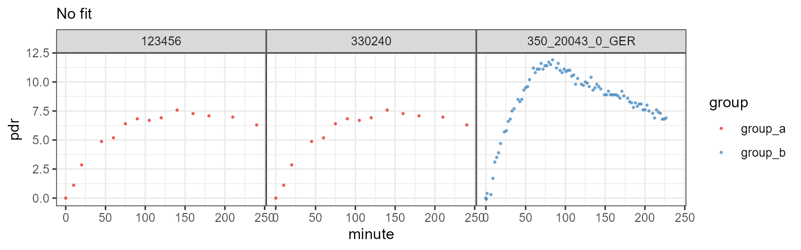
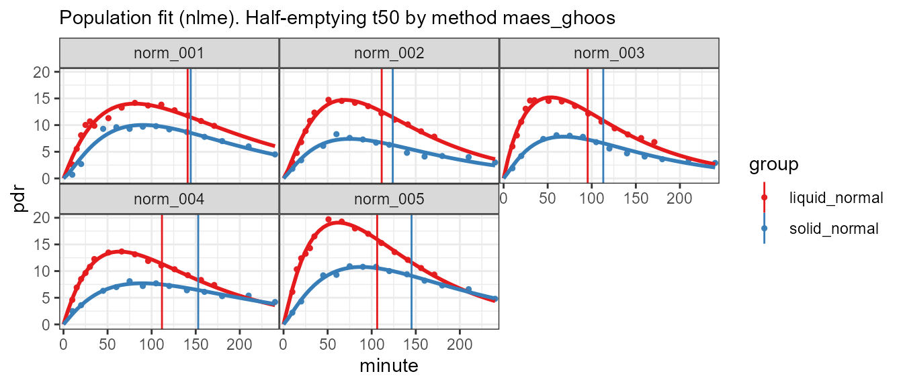

vignettes/data_formats.Rmd
data_formats.Rmd13C data can be imported in generic formats in Excel files, and in several vendor-specific formats, e.g. from BreathID and Wagner/IRIS. A collection of sample files with and without errors is available in the directory C:/R/library/breathtestcore/extdata; function btcore_file() retrieves the names and long path of the available data sets.
[1] "350_20023_0_GERWithNan.txt" "350_20043_0_GER.txt"
[3] "350_20043_0_GERBadHeader.txt" "350_20043_0_GERDuplicateTime.txt"
[5] "350_20043_0_GERNoData.txt" "350_20043_0_GERNoT50.txt" [1] "C:/R/library/breathtestcore/extdata/Standard.TXT"read_breathid() or read_breathid_xml().read_any_breathtest() which tries to guess the format.files = c(
btcore_file("IrisCSV.TXT"), # Wagner/IRIS format
btcore_file("350_20043_0_GER.txt") # BreathID
)
bt = read_any_breathtest(files)
# Returns a list of elements of class breathtest_data
str(bt, 1)List of 2
$ :List of 23
..- attr(*, "class")= chr "breathtest_data"
$ :List of 23
..- attr(*, "class")= chr "breathtest_data"
- attr(*, "class")= chr "breathtest_data_list"Classes 'tbl_df', 'tbl' and 'data.frame': 101 obs. of 4 variables:
$ patient_id: chr "123456" "123456" "123456" "123456" ...
$ group : chr "A" "A" "A" "A" ...
$ minute : num 0.01 10 20 45 60 75 90 105 120 140 ...
$ pdr : num 0 1.11 2.86 4.87 5.19 ...Passing through cleanup_data() returns a data frame/tibble and adds a grouping variable.
To plot data without fitting, use null_fit().
List of 1
$ data:Classes 'tbl_df', 'tbl' and 'data.frame': 101 obs. of 4 variables:
..$ patient_id: chr [1:101] "123456" "123456" "123456" "123456" ...
..$ group : chr [1:101] "A" "A" "A" "A" ...
..$ minute : num [1:101] 0.01 10 20 45 60 75 90 105 120 140 ...
..$ pdr : num [1:101] 0 1.11 2.86 4.87 5.19 ...
- attr(*, "class")= chr [1:2] "breathtestnullfit" "breathtestfit"To add new formats, override breathtest_read_function() and add a new function that returns a structure given by breathtest_data().
Always pass data through function
cleanup_data()to obtain a data frame that can be fed to one of the fitting functionsnls_fit(),nlme_fit(),null_fit()orbreathteststan::stan_fit().
You can add a grouping variable, e.g. for multiple meal types, to compute between group differences of means. Cross-over, randomized or mixed designs (some patients cross-over) are supported.
You must explicitlty state the grouping variable for each single file as shown below. Without names, it is possible to vectorize, e.g. read_any_breathtest(c(file1, file2)), but the ‘c()’ operator used on vectors disambiguates the names by appending numbers.
files1 = c(
group_a = btcore_file("IrisCSV.TXT"), # Use only single file with grouping
group_a = btcore_file("Standard.TXT"),
group_b = btcore_file("350_20043_0_GER.txt")
)
# Alternative syntax using magrittr operator
suppressPackageStartupMessages(library(dplyr))
read_any_breathtest(files1) %>%
cleanup_data() %>%
null_fit() %>%
plot()
Function simulate_breathtest_data() generates sample data you can use to test different algorithms. Curves with outliers can be generated by setting student_t_df to values from 2 (very strong outliers) to 10 (almost gaussian).
set.seed(212)
data = list(meal_a = simulate_breathtest_data(n_records = 3, noise = 2,
student_t_df = 3, missing = 0.3),
meal_b = simulate_breathtest_data(n_records = 4))
data %>%
cleanup_data() %>%
nlme_fit() %>%
plot()Example of a cross-over design with missing data, outliers and missing record in the red curve.
patient_id m k beta t50_maes_ghoos
1 rec_01 38 0.01310 2.41 106
2 rec_02 47 0.00918 1.69 119
3 rec_03 16 0.01039 2.25 128Three data sets are included in R format and can be loaded as shown below. All data were provided by the University Hospital of Zürich; details are given in the documentation.
data("usz_13c")
cat("usz_13c has data from", length(unique(usz_13c$patient_id)), "patients with" ,
length(unique(usz_13c$group)), "different meals")usz_13c has data from 163 patients with 4 different mealsbreathtestcore::usz_13c A large data set used to establish reference ranges for healthy volunteers and patientsbreathtestcore::usz_13c_a Exotic data, a challenge for fitting algorthmsbreathtestcore::usz_13c_d Has gastric emptying half time from MRI as attribute, and can used to compare recorded data with gold standards; see the example in the documentation.The easiest way to supply generic formats is from Excel files. The data formats described in the following are shown as examples in the workbook C:/R/library/breathtestcore/extdata/ExcelSamples.xlsx. Any other tab-separated data set can directly be inserted into the editor of the breathtestshiny web app using copy/paste.
read_breathtest_excel(); this is the only way to select a worksheet different other than first in the workbook by passing parameter sheet. All other methods only read the first worksheet.read_any_breathtest(). This always reads the first worksheet, but you can combine results from several files, even when they have different formatsWhen you have only data from one record, you can supply data in a two-column format as given in sheet 2col of workboot ExcelSamples.xlsx. The column headers must be minute, pdr. With breathtestshiny GUI, you can upload the file, or simply paste it into the editor. This is the easiest method to get a fit for a single patient.
[[1]]
# A tibble: 22 x 2
minute pdr
<dbl> <dbl>
1 0.42 0.547
2 11.9 1.64
3 23.4 3.89
4 34.9 6.13
# ... with 18 more rowsA list is returned, and its only element is a tibble with two columns. To create a standardized format for fitting and plotting, pass it through cleanup_data which adds dummy columns patient_id (all pat_a), and group (all A)
# A tibble: 22 x 4
patient_id group minute pdr
<chr> <chr> <dbl> <dbl>
1 pat_a A 0.42 0.547
2 pat_a A 11.9 1.64
3 pat_a A 23.4 3.89
4 pat_a A 34.9 6.13
# ... with 18 more rowsCompute the fit and plot
When you have more than one patient, you must add a column patient_id which may be numeric or a string.
[[1]]
# A tibble: 43 x 3
patient_id minute pdr
<chr> <dbl> <dbl>
1 7951500 0.42 0.547
2 7951500 11.9 1.64
3 7951500 23.4 3.89
4 7951500 34.9 6.13
# ... with 39 more rows# A tibble: 43 x 4
patient_id group minute pdr
<chr> <chr> <dbl> <dbl>
1 7951500 A 0.42 0.547
2 7951500 A 11.9 1.64
3 7951500 A 23.4 3.89
4 7951500 A 34.9 6.13
# ... with 39 more rowsA dummy group ‘A’ is added by cleanup_data(), so that data are in a standardized format now.
The four-column format with column names patient_id, group, minute, pdr is the standard format. In cross-over designs, you can have different groups for one patient.
bt = read_breathtest_excel(btcore_file("ExcelSamples.xlsx"), "4col_2group") %>%
cleanup_data()
kable(sample_frac(bt, 0.08) %>% arrange(patient_id, group), caption = "A sample from a four-column format. See worksheet 4col_2group.")| patient_id | group | minute | pdr |
|---|---|---|---|
| norm_001 | liquid_normal | 40 | 9.1 |
| norm_002 | liquid_normal | 75 | 14.3 |
| norm_002 | liquid_normal | 120 | 11.4 |
| norm_002 | solid_normal | 90 | 7.3 |
| norm_002 | solid_normal | 120 | 6.3 |
| norm_002 | solid_normal | 10 | 1.8 |
| norm_003 | liquid_normal | 10 | 6.0 |
| norm_005 | liquid_normal | 50 | 19.7 |
| norm_005 | liquid_normal | 180 | 8.9 |
| norm_005 | solid_normal | 140 | 9.4 |

When you have DOB data (d), you can use dob instead of pdr as the header of the last column. DOB data will be automatically converted to PDR with function dob_to_pdr(). Since no body weight and height are given, the defaults of 75kg and 180 cm are assumed.
The half-emptying time and lags do not depend on this assumptions. Only the parameter m of the fit which normalized area and amplitude, is affected, and I do not know of a case the m has been used in clinical practice.
The first lines of IrisMulti.TXT
"Testergebnis"
"Nummer","22"
"Datum","12.06.2009"
"Testart"
"Name","Magenentleerung fest"
"Abkürzung","GE FEST"
"Substrat","Natriumoktanoat"Use read_iris() or read_any_breathtest() :
IRIS/Wagner composite file. These data cannot be fitted successfully with the single-curve fit method, therefore only data are shown.
Files in this format start like this (lines shortened …)
"Name","Vorname","Test","Identifikation","Testzeit[min]",...
"Einstein","Albert","GE FEST","330240","0","0","-26.32","4.501891E-02", ...
"Einstein","Albert","GE FEST","330240","10","2.02","-24.3","5.617962E-02","2.391013",..
"Einstein","Albert","GE Use read_iris_csv() or read_any_breathtest() :
IRIS/Wagner CSV file
Files in this format start like this
Test and Patient parameters
Date - 12/11/12
End time - 08:54
Start time - 12:49
Patient # - 0
Patient ID - Franz
Use read_breathid() or read_any_breathtest():
BreathID composite file
The more recent XML format from BreathID can contain data from multiple record and starts like this:
<Tests Device="1402">
<Test Number="2">
<ID>TEST123</ID>
<DOB>N/A</DOB>
<StartTime>19Jul2017 11:56</StartTime>
<EndTime>19Jul2017 12:12</EndTime>
<LastResultCode>0</LastResultCode>
<StoppedByUser>true</StoppedByUser>
</Test>
<Test Number="3">
<ID>45689</ID>
<StartTime>19Jul2017 12:22</StartTime>
<EndTime>19Jul2017 12:29</EndTime>
<LastResultCode>0</LastResultCode>Use read_breathid_xml() or read_any_breathtest():
read_breathid_xml(btcore_file("NewBreathID_multiple.xml")) %>%
cleanup_data() %>%
nls_fit() %>%
plot()BreathID XML format
Grouping is most useful in a cross-over design to force within-subject comparisons by functions coef_by_group() and coef_diff_by_group(); in the above case, the default grouping above might not be what you required. Replace the group parameter manually to remove the groups, but do not delete the column with group = NULL, because the fitting functions requires a dummy group name.
# Could also use read_any_breathtest()
read_breathid_xml(btcore_file("NewBreathID_multiple.xml")) %>%
cleanup_data() %>%
mutate(
group = "New"
) %>%
nls_fit() %>%
plot()BreathID XML format with manual grouping.